A Few of Our Favorite Things
node
npm, bower, grunt
grunt-esri-slurp
AMD Butler
generator-dojo-widget
grunt-arcgis-press
Travis CI
summary sheet
let's lay a foundation
node.js
package managers
npm
npm is a back-end package manager
bower
bower is a front-end package manager
task runners
grunt
esrijs api
is a font-end package
bower install esri-js
not yet
grunt-esri-slurp
the next best thing
stop gap
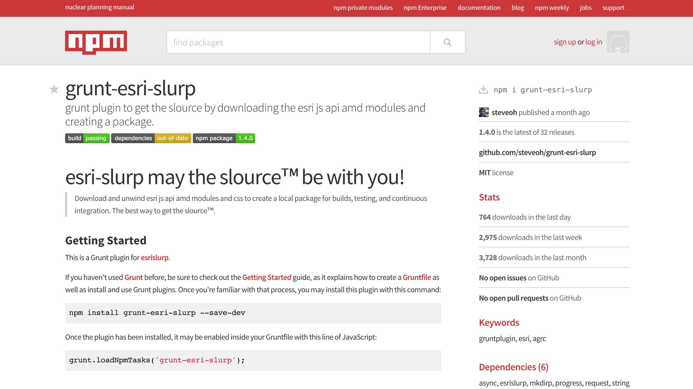
npm install grunt-esri-slurp
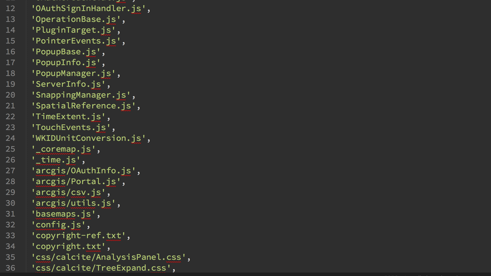
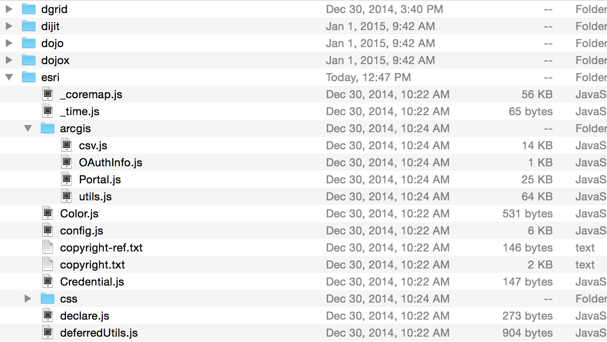
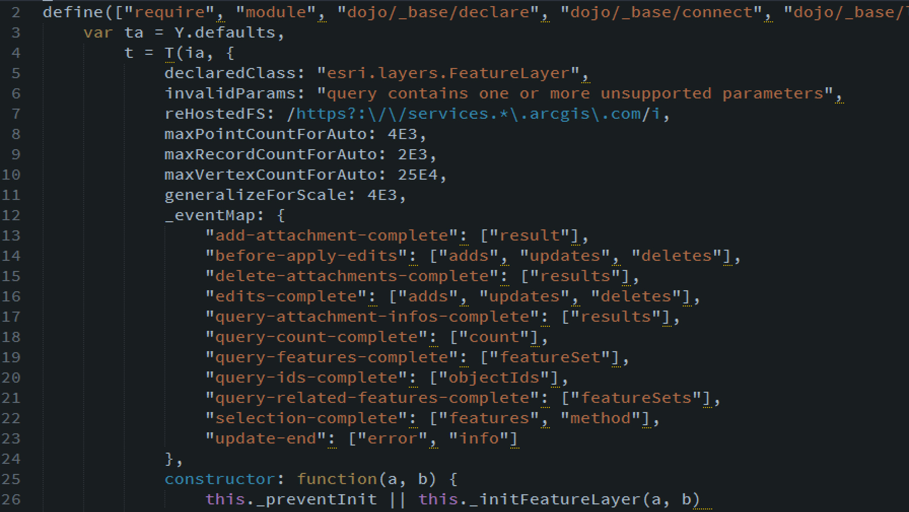
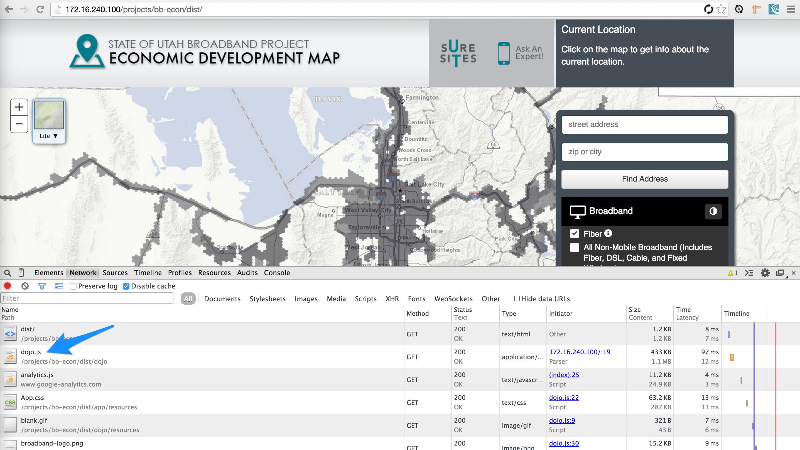
dojo build system
esri js api + the build system =
Demystifying the Dojo Build System
two problems
#1
hosted on a CDN
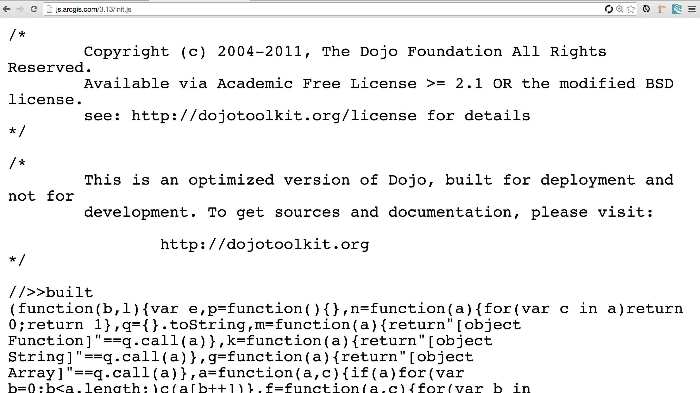
don't want to commit to version control
#2
it is already built
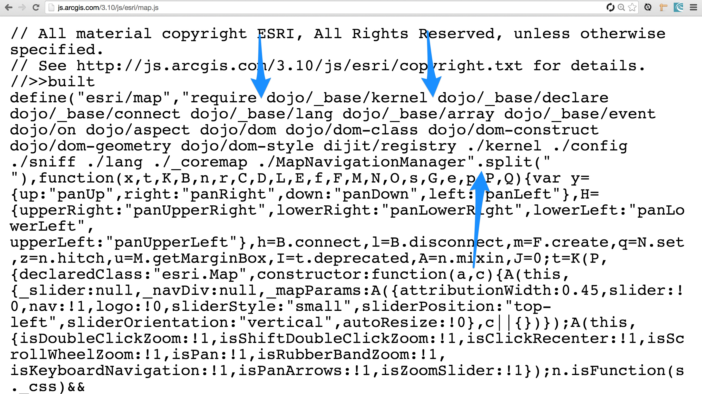
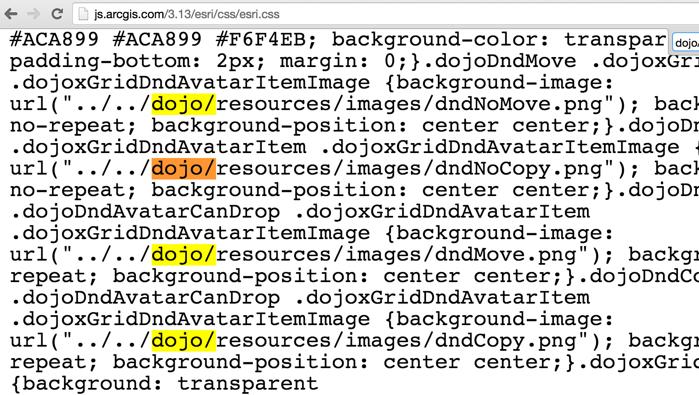
esrislurp handles these issues
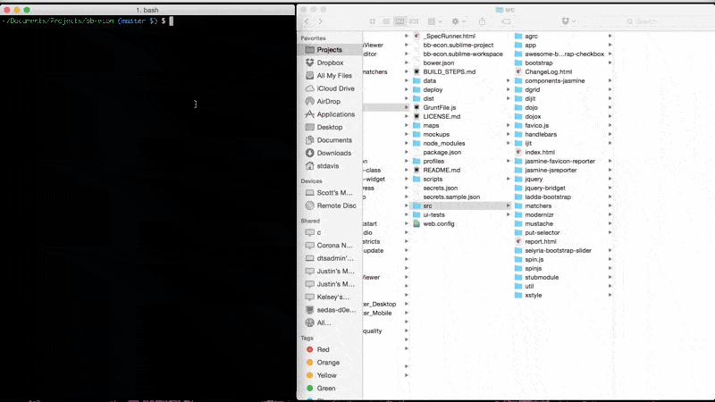
AMD Butler
built for sublime text
allows you to stay in the zone
get a great idea
start coding
need to add a new AMD module
stop
scroll to the top
remember the module id
scroll some more
remember the modules order in the factory function
think of what to name the module
add the argument variable
and then
completly forget what you were doing
AMD Butler solves this
add, remove, and sort AMD modules
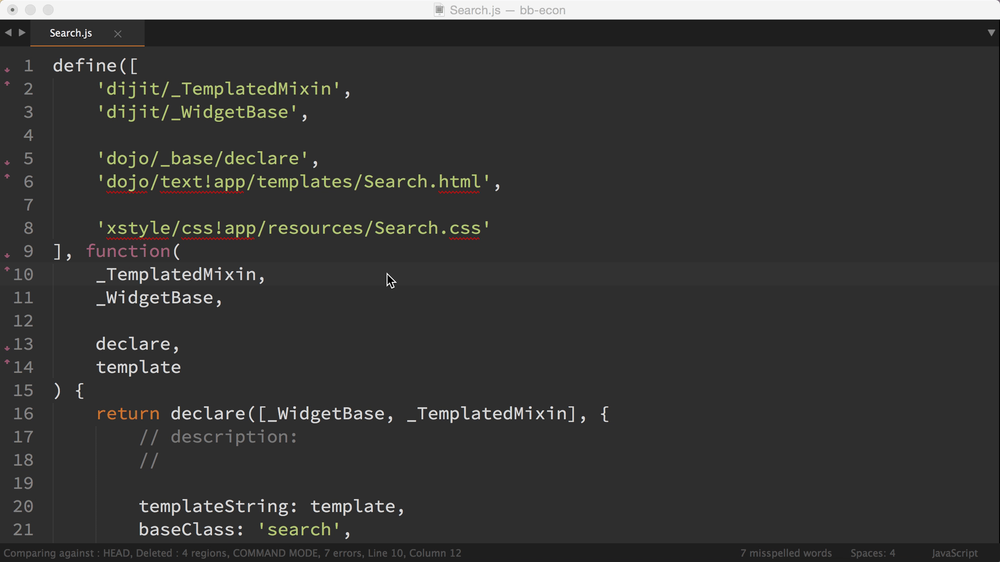
something else for staying in the zone
generator-dojo-widget
quickly scaffold new Dojo widgets
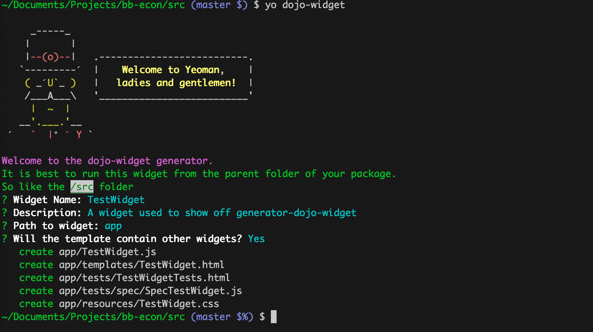
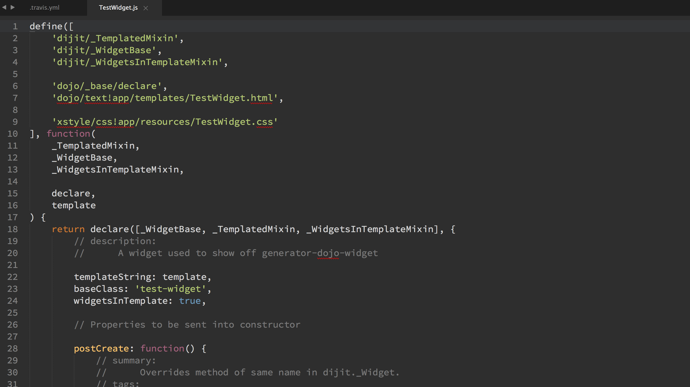
on the fence about unit tests?
jasmine tests are included at no extra cost!
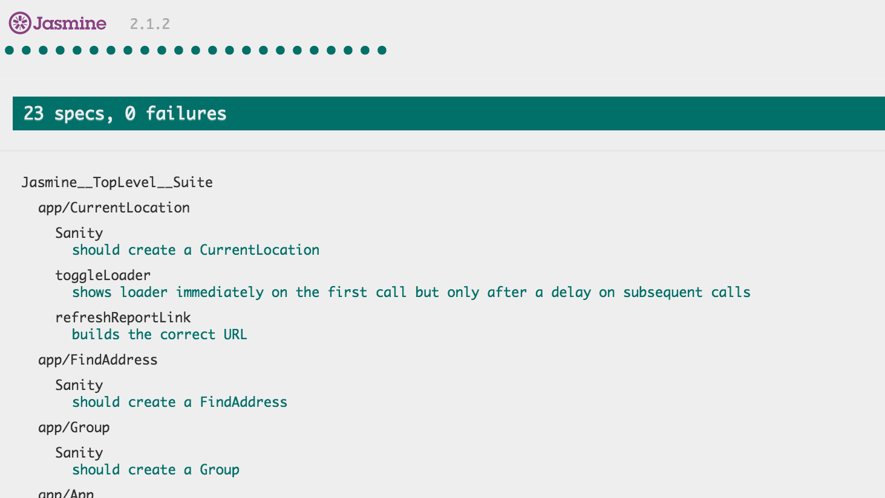
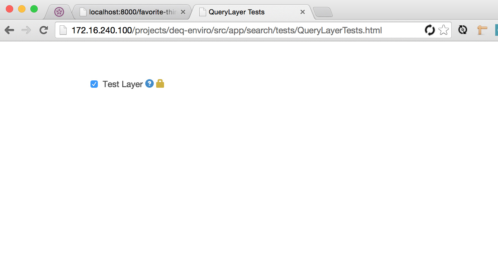
so far
git clone && npm install && bower install && grunt
quickly create widgets
while staying in the zone
what are we missing
that map service...
oh it is documented in the readme
that is a great excuse
automate the entire process
the ultimate goal
low friction
grunt-arcgis-press
publishes services
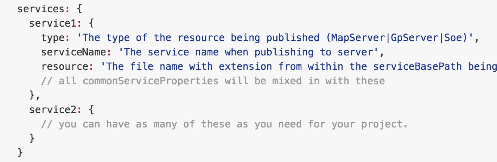
different environments, dev, test, stage
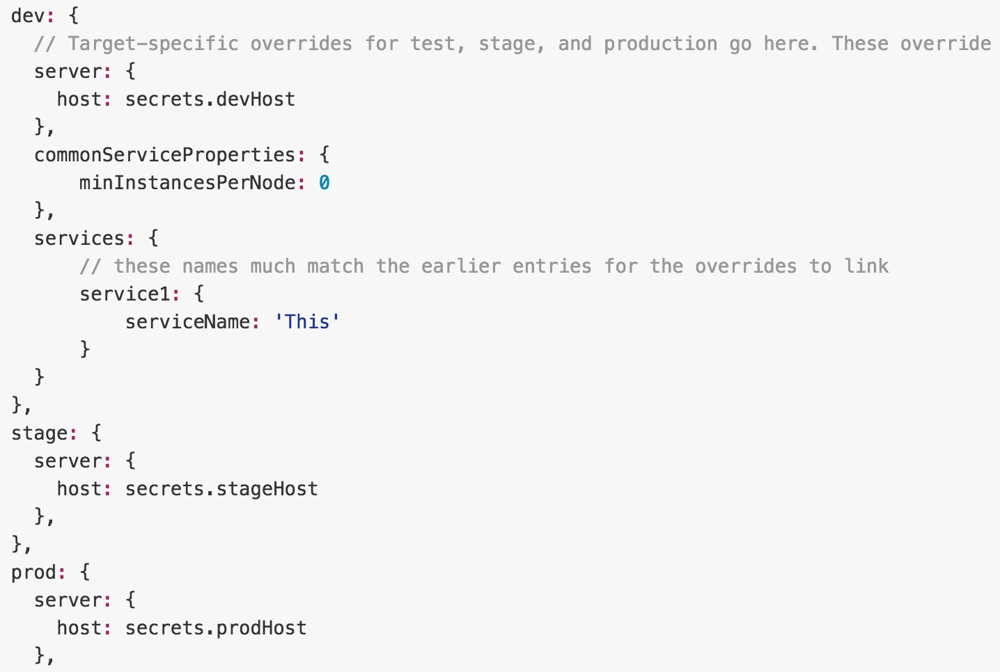
continuous deployment
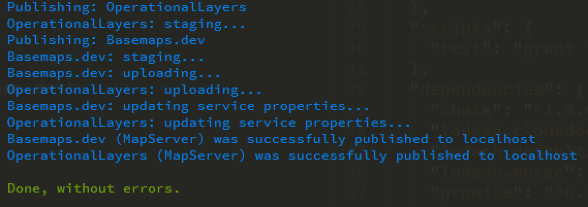
Putting it all together
Travis CI
.travis.yml
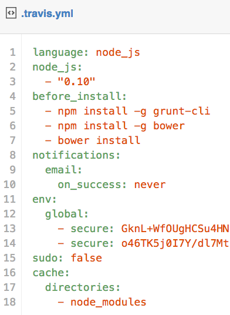
git clone project
npm & bower install
grunt-esri-slurp
jshint
jasmine on saucelabs
dojo build
deploy/arcgis_press?
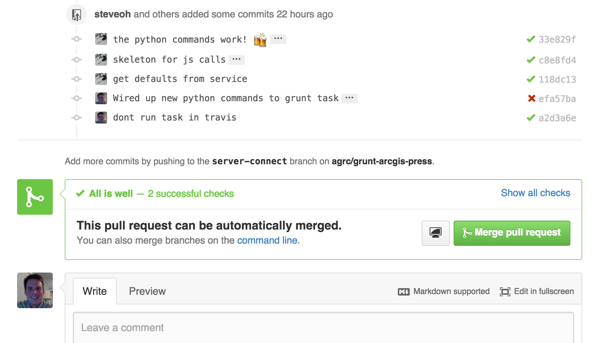
why?
"you'll be famous" @mpeters
building tools for yourself is fun and usually provides good ROI